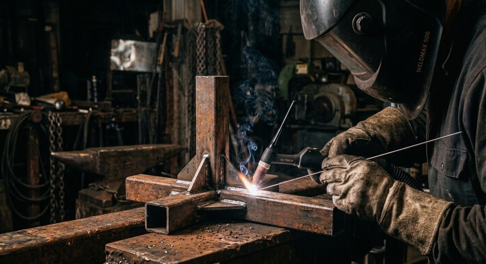

Escaliers métalliques
Droits, quart tournant, hélicoïdaux ou à limon central, intérieurs et extérieurs. Toutes formes, à vos dimensions.
En savoir plusEscaliers, garde-corps, portails, pergolas et structures acier dessinés, soudés et posés par un seul artisan. Pour les particuliers, les entreprises et les architectes, dans un rayon de 50 km.
Chaque ouvrage est dessiné à vos cotes, fabriqué dans mon atelier puis posé par mes soins. Acier, inox, finition thermolaquée : du solide, pensé pour durer.
Droits, quart tournant, hélicoïdaux ou à limon central, intérieurs et extérieurs. Toutes formes, à vos dimensions.
En savoir plusRampes et garde-corps pour escaliers, balcons, terrasses et mezzanines, intérieurs comme extérieurs.
En savoir plusPortails battants ou coulissants, portillons, grilles de défense et clôtures pour sécuriser votre propriété.
En savoir plusMezzanines, planchers, poutres et ossatures acier pour la maison, l'atelier ou le local professionnel.
En savoir plusPergolas et structures d'extérieur en acier, dimensionnées pour votre terrasse et votre façade.
En savoir plusPièces et ouvrages fabriqués d'après vos plans ou ceux de votre architecte, avec finition thermolaquée.
Quatre étapes, un seul interlocuteur. Vous savez toujours où en est votre ouvrage.
Je me déplace chez vous pour comprendre le projet et relever les mesures exactes.
Je dessine l'ouvrage et vous remets un devis gratuit et détaillé.
Découpe, soudure et finitions (thermolaquage) réalisées en atelier.
Installation sur place et vérification finale avec vous.

Chaque ouvrage est soudé à la main, dans l'atelier, avant d'être posé chez vous.
Celui qui prend vos cotes est celui qui soude et celui qui pose.
TDS, c'est l'entreprise de Tony Dos Santos, métallier dont l'atelier est à Villeneuve-sur-Lot. Je travaille l'acier et l'inox pour créer des ouvrages solides, durables et adaptés à votre maison ou à votre chantier.
Demander un devis gratuitDepuis mon atelier de Villeneuve-sur-Lot, j'interviens dans tout le Villeneuvois, l'Agenais, le Fumélois et jusqu'au Marmandais. Votre commune n'apparaît pas ? Appelez-moi, je vous réponds tout de suite.
Oui. Je me déplace pour étudier votre projet et prendre les cotes, puis je vous remets un devis détaillé, gratuit et sans engagement.
Chaque ouvrage est sur mesure, donc le prix dépend de vos dimensions et des finitions. Pour un premier ordre de grandeur, consultez la page prix indicatifs, puis demandez votre devis gratuit.
Oui. En plus des particuliers, je réalise des ouvrages pour les entreprises, les commerces et les architectes, y compris la fabrication d'après vos plans.
Je travaille principalement l'acier et l'inox. Les ouvrages en acier peuvent être thermolaqués dans la teinte de votre choix pour une finition durable, y compris en extérieur.
Oui. Pour une urgence (portail ou grille endommagés, ouvrage à sécuriser) ou un chantier qui ne peut se faire qu'en dehors de vos heures d'ouverture, j'interviens aussi le soir et le week-end. Ces interventions sont facturées avec un tarif majoré, toujours annoncé avant de commencer.
Je suis souvent à l'atelier ou sur chantier. Laissez-moi un message vocal ou un SMS au 06 64 92 33 08 avec votre nom et votre commune : je vous rappelle.
Le plus simple : un coup de téléphone, du lundi au vendredi de 8h à 17h30. En cas d'urgence, j'interviens aussi le soir et le week-end, avec un tarif majoré annoncé à l'avance.
06 64 92 33 08Déjà client ? Laissez un avis sur Google – ça m'aide beaucoup.